India's battery energy storage market is scaling rapidly, with over 171 GWh of storage capacity tendered since 2018 and the first half of 2025 alone accounting for 55 GWh of new tenders. As procurement accelerates through agencies like SECI, NTPC, BRPL (BSES Rajdhani Power Limited), and state DISCOMs, acceptance testing frameworks have matured into sophisticated, multi-phase quality assurance processes.
Indian buyers now demand comprehensive Factory Acceptance Tests (FAT) at the manufacturer's facility and Site Acceptance Tests (SAT) at the project location — both structured around national standards (IS 16270, IS 17092, IS 17387) and international benchmarks (IEC 62619, UL 9540), layered with India-specific environmental and grid compliance requirements.
This article covers every major acceptance test category that Indian buyers — from DISCOMs to CPSUs to state utilities — routinely specify, referencing actual tender documents from Solar Energy Corporation of India Limited , NTPC Limited , and BSES Rajdhani Power Limited , as well as the newly notified CEA Safety Regulations 2026.
Why FAT and SAT Are Non-Negotiable in India
FAT and SAT serve fundamentally different purposes, but both are contractually mandatory in every major Indian BESS tender.
FAT (Factory Acceptance Test) is conducted at the manufacturer's facility before equipment is shipped. It acts as the first quality firewall — verifying that the system meets design specifications, safety standards, and performance requirements before any significant logistics investment is made. Research by Clean Energy Associates (CEA) found that during FATs, 28% of BESS systems had fire detection or suppression issues, 19% showed faulty auxiliary circuit panels, 15% had thermal management defects, and 6% even failed capacity tests — making factory-level testing a critical risk filter.
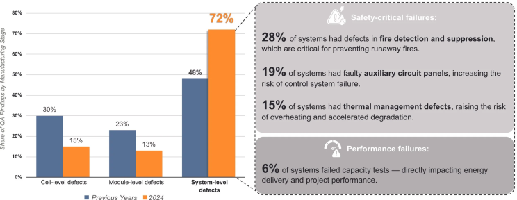
SAT (Site Acceptance Test) is the final quality gate before commercial operation. It validates not only that the system was built correctly, but also that it arrived intact after long-distance transport (often from Chinese manufacturing facilities), integrates safely with local grid infrastructure, and operates reliably under India's extreme environmental conditions. A passed FAT does not guarantee a flawless installation — long transit routes expose systems to moisture ingress, broken cables, or dents, and most manufacturers only warrant storage from EX-FAT to energization for three to four months, yet logistics in India often push timelines beyond this window.
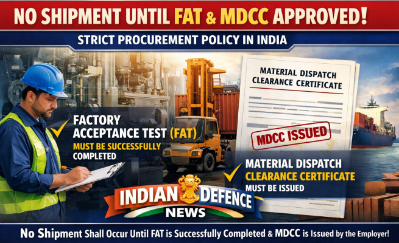
A key principle in Indian procurement: no shipment shall occur until FAT is successfully completed and the Material Dispatch Clearance Certificate (MDCC) is issued by the employer or their representative.
Phase 1: Factory Acceptance Test (FAT)
Pre-FAT Documentation Requirements
Before any physical testing begins, Indian buyers require the supplier to submit a comprehensive FAT plan for review and approval. SECI's standard RfP, for example, mandates that this plan cover all subsystem and module-level tests. Standard documentation submitted at the FAT stage includes:
- Technical datasheets and design specifications for all components
- Factory test reports for individual components (cells, BMS, PCS)
- Certifications: IEC 62619, IEC 63056, UL 1973, UL 9540, and for Indian market entry, BIS certification under IS 17092:2019 or IS 16270:2023linkedin+1
- UN 38.3 (transport safety certification for lithium cells)
- Fire protection system design documents
- Power distribution and single-line diagrams
- Auxiliary power consumption records
- Shipping certifications and logistics plan
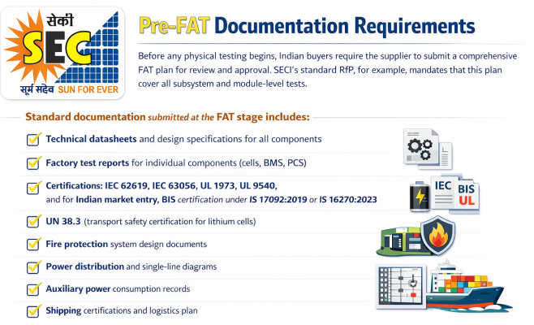
Visual and Mechanical Inspection
Visual inspection is the starting point of every FAT checklist used by Indian buyers:
- Uniform paint job, no cracks, dents, rusting, or burrs on the BESS container exterior
- Sealant integrity at door and window gaps
- Battery rack structure and battery pack surfaces — smooth, clean, free from rust
- Labels and logos: correct font type, size, colour scheme
- Cable routing — wires not exposed, no loose connections, circuit breakers properly terminated
- Crimping terminals — no deformity; cable insulation intact without tears
- Fuse sizing for battery packs and high-voltage (HV) boxes — verified as appropriate
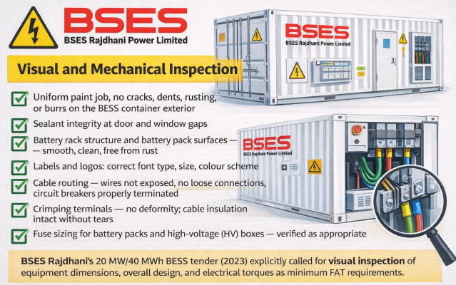
BSES Rajdhani's 20 MW/40 MWh BESS tender (2023) explicitly called for visual inspection of equipment dimensions, overall design, and electrical torques as minimum FAT requirements.
Electrical and Insulation Testing
- DC Insulation Test: Conducted between positive terminal and ground, and negative terminal and ground, at a DC voltage higher than the battery's maximum DC voltage capability, for a specified duration. The insulation resistance value must exceed the contractual minimum
- Voltage and Current Measurements: Battery system voltage and current must be within specified ranges at all test loads
- Capacity Test: Full charge followed by full discharge to verify that available energy aligns with the nameplate specifications
- Impedance and Internal Resistance Test: Measured across cells and modules to detect wiring defects or connector issues
- Cell Voltage Uniformity: The difference between maximum and minimum cell voltages across all cells must not exceed the specified tolerance
- Ground Leakage Detection: Verification that the battery system's ground fault detection system activates at calibrated leakage levels
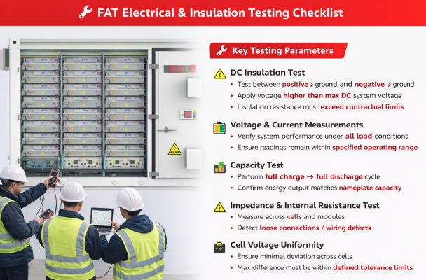
BMS Functional Testing
Battery Management System testing is a dedicated section in Indian tender documents, given that India's IS 17387:2020 mandates BMS certification:
- BMS parameters displayed correctly on the controls interface
- Live status of each battery cluster visible, with no pending alarms
- BMS settings verified as correct; communication between each BMS level (cell → module → rack → cluster) is normal
- Emergency stop button test: BMS must disconnect all DC contactors and display emergency stop information on the controls screen
- Opening any cluster door must trigger an alert on the controls interface
- BMS protections verified: reverse polarity, over/under voltage, over temperature, over charge
- Cell-level and module-level thermal runaway detection as required under CEA's new Chapter XA (effective April 1, 2027)
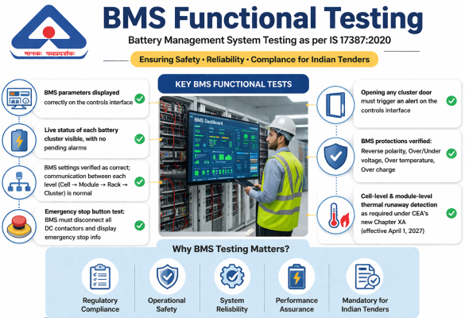
Power Conditioning System (PCS) Testing
- Conversion Efficiency Test: PCS efficiency must meet the specified minimum — typically ≥98% for PCS-level and ≥86% Round-Trip Efficiency (RTE) at the AC terminal (PCS output) in SECI tenders
- Grid Compliance Test: Ensures the system meets CEA (Technical Standards for Connectivity to the Grid) Regulations 2007 and subsequent amendments
- Power Factor Test: The system must maintain PF in the range of -0.95 to +0.95 at the Point of Interconnection
- Total Harmonic Distortion (THD): Power quality parameters verified against IEC 61000-6-2 and IEC 61000-6-4
- Anti-Islanding Test: IEC 62116 compliance verified for grid-tied inverter protection
- Step Response and Ramp Rate: From a 50% State of Charge (SOC), the BESS must transition to rated power within the contractual ramp-time window
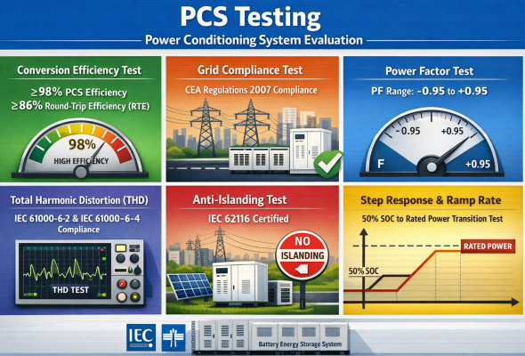
Load Bank and Charge-Discharge Cycle Testing
Indian buyers, particularly grid-scale procurers like SECI and NTPC, require performance at multiple load levels:
- System connected to a simulated load bank and tested at 25%, 50%, 75%, and 100% of rated power
- Full Charge Test: Measures energy required to reach 100% SOC
- Full Discharge Test: Confirms dispatchable energy at specified C-rate (typically 0.5C for 2-hour systems)
- Round-Trip Efficiency (RTE) Test: Three consecutive full charge-discharge cycles at 100% rated power; average efficiency must meet the contract minimum. In SECI's 600 MW/1200 MWh tender, RTE ≥86% at PCS AC terminals (Point B) was the contractual threshold, with Liquidated Damages (LDs) triggered for any shortfall.
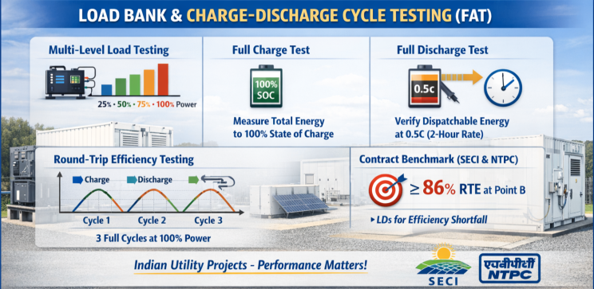
Thermal Management and Safety Systems (FAT)
- HVAC/Liquid Cooling: No leakage in the liquid cooling pipe system; cooling and heating functions are normal; HVAC has no airflow obstructions
- Thermal Sensors: Temperature, humidity, and smoke sensors properly installed and calibrated
- Fire Suppression System: Verified as functional, with alarms visible on the controls screens
- For systems >200 kWh, fire suppression is mandatory under CEA's 2026 amendment regulations
- Container-level explosion protection, forced ventilation, and automated louvers verified per CEA Chapter XA
- Dehumidifier Test: Dehumidifier value changed to a lower set point; humidity response verified within a short window
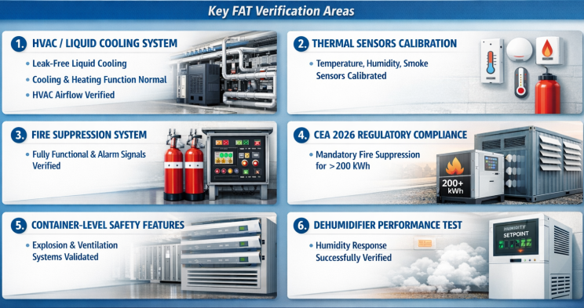
Communication and Control Testing (FAT)
- MODBUS TCP/IP communication protocols verified between BMS, EMS, and PCS
- IEC 104 SCADA interface tested for integration with buyer's control room (as required by BRPL)
- Redundant communication channels verified
- Control system verified for local, remote, and automatic unattended operation modes
- Alarm functions: smoke/fire, over-temperature, door interlock, DC ground fault, grid fault — all triggered and confirmed on the controls interface
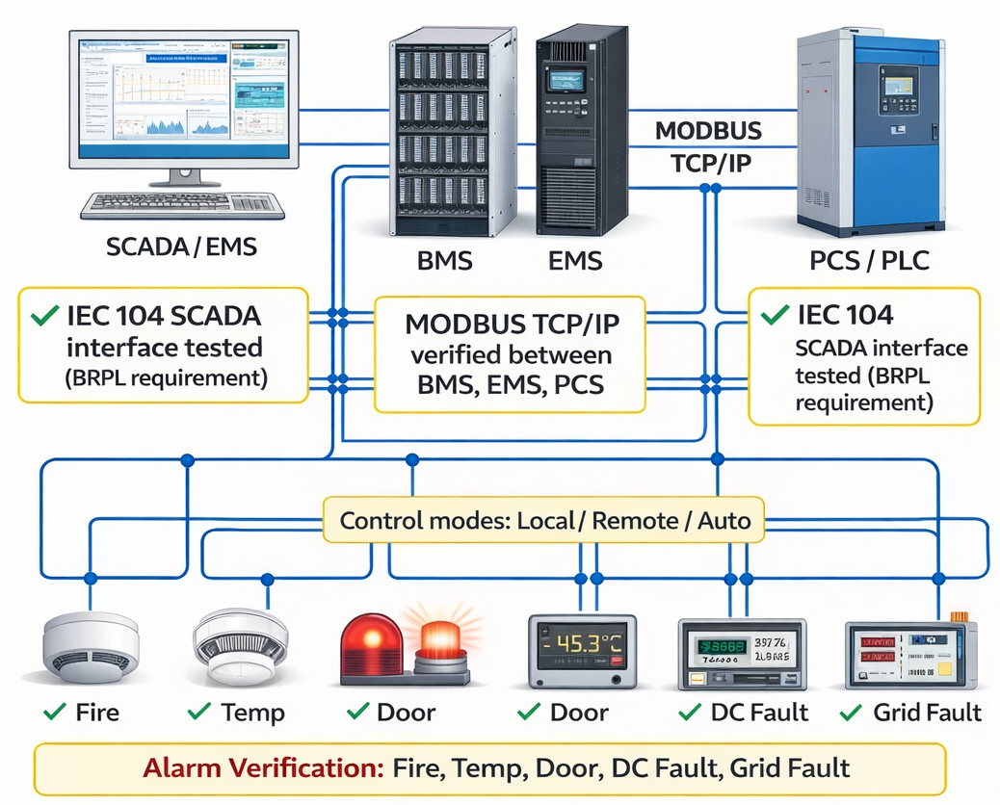
Phase 2: Site Acceptance Test (SAT)
Why SAT Cannot Replace FAT — and Vice Versa
FAT and SAT are complementary, not interchangeable. FATs are often sample-based and conducted under partial stimulation — the BESS cannot be fully energized at the factory because there is nowhere for the energy to go. SAT, on the other hand, tests the entire integrated system under real-world operating conditions at the actual site. For BESS projects specifically, SAT requires far more testing depth than for solar or wind projects, because batteries are dynamic systems with complex interactions between cells, inverters, HVAC, and control software.
Cold Commissioning Phase (Pre-Energization)
Once installed at the site, buyers require a phased approach. Cold commissioning (pre-energization) covers:
- Visual Inspection (Sample-Based): Typically, 5% of all containers sampled for wiring integrity, earthing connections, and fire/HVAC installations
- Continuity Tests: End-to-end cable continuity checks for all circuits
- Insulation Resistance Tests: Per IEC 60364-6 and CEA regulations; verified for DC cables, AC cables, and earthing conductors
- Earthing Verification: Earth resistance measured with a calibrated tester; must meet IS and CEA standards
- Polarity and Phase Sequence: Verified before any energization
- Transport Damage Inspection: Detailed verification for dents, broken cables, moisture ingress — issues that occur after FAT during transit
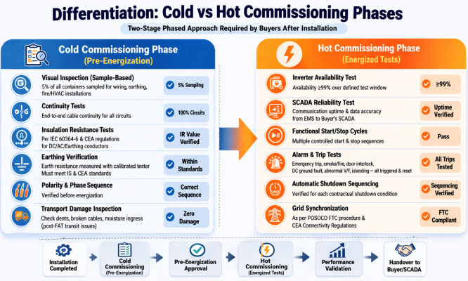
Hot Commissioning Phase (Energized Tests)
Inverter Availability Test: Typically ≥99% verified over a defined test window
- SCADA Reliability Test: Communication uptime and data accuracy from EMS to buyer's SCADA
- Functional Start/Stop Cycles: Multiple controlled start and stop sequences
- Alarm and Trip Tests: Emergency trip switch, smoke/fire alarm, door interlock, DC ground fault, abnormal frequency, abnormal voltage, islanding — all triggered and reset
- Automatic Shutdown Sequencing: Verified for each contractual shutdown condition
- Grid Synchronization: Verified per POSOCO First Time Charging (FTC) procedure and CEA Connectivity Regulations
Full-System Performance Tests (SAT)
These are the most commercially critical tests for Indian buyers, often linked directly to payment milestones and performance guarantees:
1. Energy Content / Capacity Discharge Test
Defined as the Operational Acceptance Test (OAT) in several Indian tenders including Bihar's BSPGCL 185 MW Solar + 254 MWh BESS tender. Procedure:
- Charge BESS to 100% SOC
- Discharge at 100%, 75%, 50%, and 25% rated power (three repetitions at 100%)
- Dispatchable energy at the Point of Interconnection must equal or exceed the contracted value for that project year
- In SECI's 600 MW/1200 MWh project: ≥1200 MWh at the 220 kV Point of Interconnection in Year 1
2. Round-Trip Efficiency (RTE) Test
Three full charge-discharge cycles at 100% rated power. RTE is measured as AC-to-AC efficiency including auxiliary power consumption. SECI's acceptance criteria:
- ≥86% at PCS AC terminals (Point B)
- ≥82% at the 220 kV metering point (including transformer and cable losses)
- Shortfall triggers NPV-based Liquidated Damages over the contract life
NTPC REL tenders specify that RTE must be measured as the annual average round-trip AC/AC efficiency at the metering point, considering all energy losses including auxiliary power.
3. Step Response and Ramp Rate Test
From 50% SOC, the BESS must:
- Step from zero to rated power output within the contractual response time
- Step from rated power back to zero
- Repeat for four sequential steps (charge → discharge → charge → discharge)
- Response time and settling within 2% of setpoint must be met
4. BESS Availability Test
Measured over the SAT period:
- SECI and NTPC typically require ≥98% BESS availabilityseci+2
- BRPL's tender required ≥95% system availability at PCS level
- Availability definition: the percentage of contracted hours during which the BESS is ready to dispatch at contracted capacity
5. Auxiliary Power Consumption
Measured at rated active power, rated reactive power, and standby mode. Recorded for contractual reference; typical tolerance is ±2%.
Grid Integration Tests
Grid compliance is among the most stringent requirements in Indian BESS procurement, given the regulatory oversight of CERC, CEA, and SLDCs:
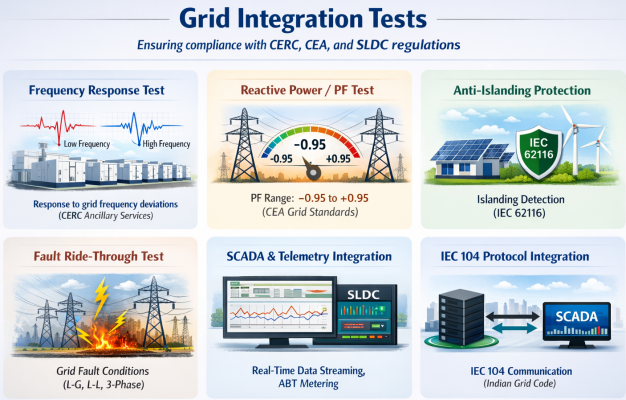
- Frequency Response Test: BESS response to grid under-frequency and over-frequency events verified per CERC ancillary services framework
- Reactive Power / Power Factor Test: Verified at the Point of Interconnection across the full PF range (-0.95 to +0.95) as required by CEA Grid Standards
- Anti-Islanding Protection: IEC 62116-based islanding detection verified
- Fault Ride-Through (FRT): Verification that the BESS remains connected during specified grid fault conditions (line-to-ground, line-to-line, three-phase)
- SCADA and Telemetry Integration: Real-time data streaming to SLDC/RLDC verified; ABT metering accuracy confirmed per CEA meter regulations
- IEC 104 Protocol Integration: Communication with grid operator SCADA verified as per Indian grid code requirements
India-Specific Testing Requirements
Environmental and Climate Stress Tests
India's diverse geography introduces testing requirements that go beyond standard international frameworks:
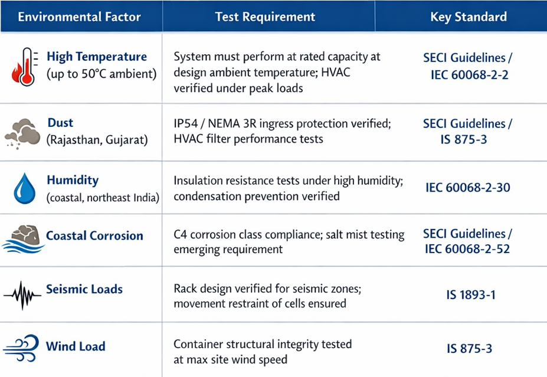
The NITI Aayog's report on chemistry-agnostic standards explicitly calls for testing across -20°C to 60°C to reflect Indian operational realities.
Regulatory and Certification Compliance Tests
Every BESS sold or deployed in India must carry the following certifications, verified during FAT:
- BIS Certification under IS 16270:2023 (solar storage batteries) or IS 17092:2019 (general stationary BESS) — mandatory for market entry under the Solar Systems, Devices and Components Goods Order, 2025
- BMS Certification under IS 17387:2020
- IEC 62619 (cell and battery safety) — required for utility and industrial BESS tenders
- IEC 63056 (cell safety supplementary requirements)
- UN 38.3 (lithium battery transport safety)
- UL 9540A (thermal runaway fire propagation test) — increasingly specified at cell, module, rack, and system levels
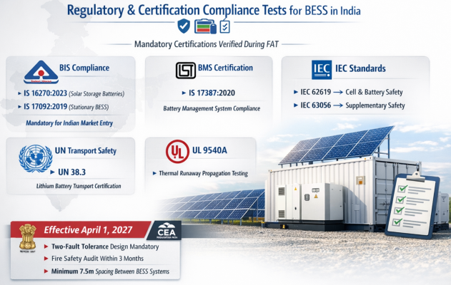
From April 1, 2027, the CEA (Measures relating to Safety and Electric Supply) Amendment Regulations, 2026 will make additional requirements enforceable, including two-fault tolerance design, mandatory third-party fire safety audits within three months of commissioning, and 7.5-meter minimum spacing between BESS enclosures and structures.
Local Content (Make in India) Verification
Under the Ministry of Power Govt of India 2025 amendment to VGF Guidelines, all BESS projects under the Viability Gap Funding Scheme must demonstrate a minimum 20% domestic value addition. This includes:
- Indigenously developed Energy Management System (EMS) software — already mandated under the VGF amendment of August 4, 2025
- Procurement documentation verifying local content percentage, reviewed during SAT/commissioning
- DPIIT registration compliance for vendors from land-border countries
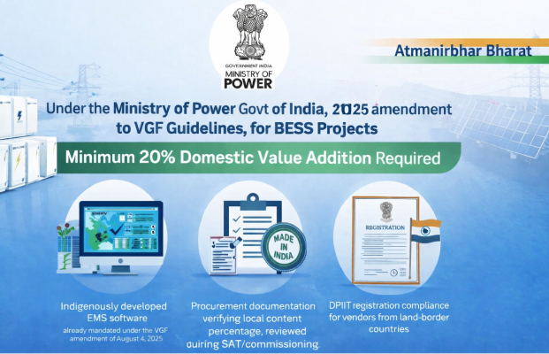
Performance Guarantee Framework Post-SAT
SAT completion is not the end of the buyer's performance expectations — it is the baseline for long-term contractual assurance.
Annual Performance Verification
In SECI and NTPC contracts, RTE and energy content are verified annually throughout the O&M period. Actual plant operation can count as an extension of commissioning tests. Annual verification includes:
- Energy content at the point of interconnection compared to the year-specific contracted minimum (declining schedule over 15 years)
- RTE at PCS terminals compared to contractual threshold
- BESS Availability calculated over the billing period
Liquidated Damages for RTE Shortfall
SECI tenders apply a Net Present Value-based Liquidated Damages formula for RTE shortfall: losses are calculated as the energy shortfall multiplied by the energy tariff (typically ₹4.5/kWh in recent tenders), discounted at 8.5% over the 15-year project life. LDs are reversible if the BESS demonstrates compliance for two consecutive billing periods under the SLA.
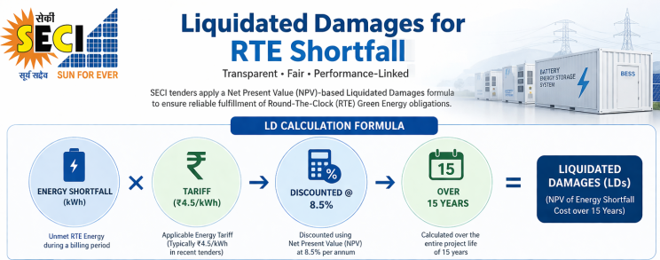
Degradation and Capacity Warranty
Buyers now routinely distinguish between two types of warranties:
- Degradation Warranty: OEM guarantees a minimum State of Health (SoH) — typically ≥80% retained capacity — after a defined number of years or cycles. BSES Rajdhani Power Limited required dispatchable capacity to remain at 97.5% of 40 MWh at end of Year 1, declining by ~2.5% annually
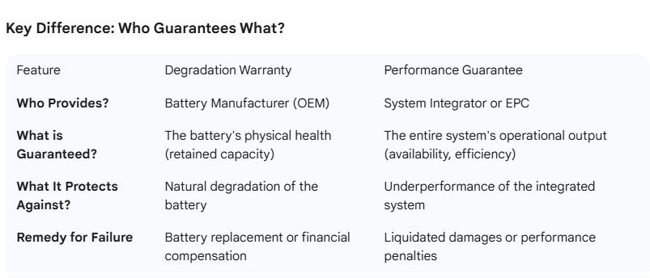
- Performance Guarantee: System integrator or EPC contractor guarantees overall system-level outcomes including availability, RTE, and cycle delivery. This must remain valid regardless of product warranty expiry
Buyers are increasingly insisting on clear remedies — capacity top-up, cell replacement, or cash compensation per MWh shortfall — and transparent measurement methodology (SoH definition, depth of discharge, operating temperature, testing frequency) in contract language.
FAT vs. SAT: Key Differences for Indian Buyers
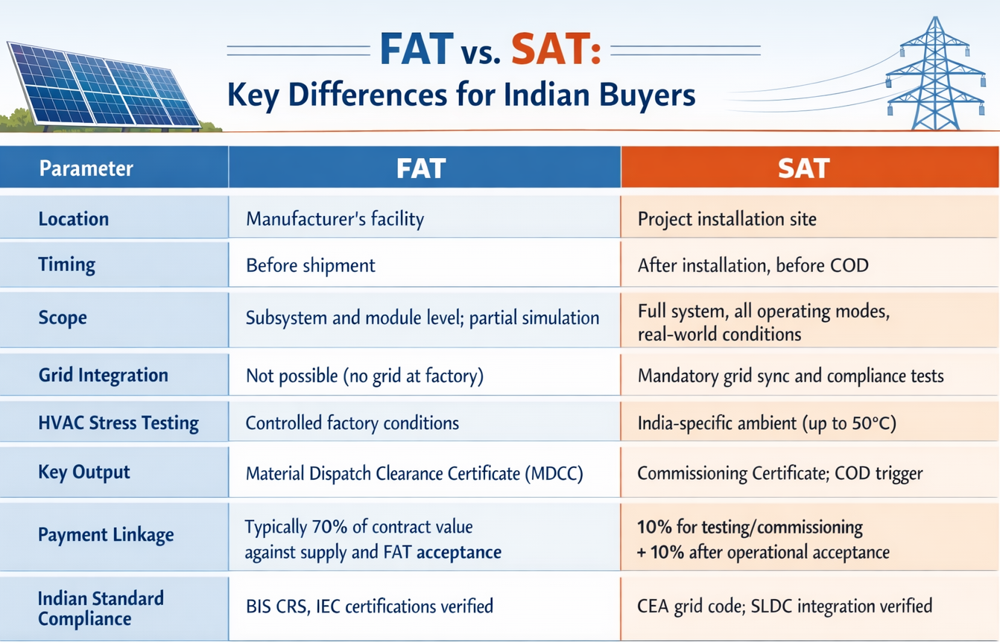
Practical Guidance: What Buyers Are Getting Wrong
Industry experts and recent tender analyses highlight several common gaps in current Indian BESS acceptance testing practice:
- Sampling FAT risk: Many FATs test only a sample of containers, missing container-specific issues. Buyers should push for 100% string-level electrical testing, even if full-capacity testing remains sample-based.
- Thermal imaging omission: Standard FATs ignore thermal anomalies; IR camera thermography of battery racks and busbars during load tests should be explicitly specified.
- Fire suppression functionality gap: CEA's own data and industry reports show fire suppression systems non-functional in 25% of inspected projects — buyers should require a live activation test (with inert gas) during FAT.
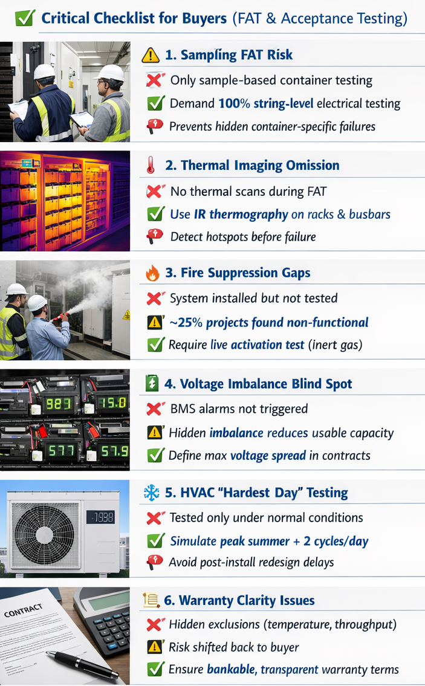
- Voltage imbalance blind spots: Cell voltage imbalances that don't trigger BMS alarms but affect usable capacity are commonly missed. Buyers should specify maximum allowable voltage spread in contract acceptance criteria.
- HVAC "hardest day" testing: The system's HVAC must be stress-tested under the most demanding operating scenario — two full cycles per day at peak summer temperatures — not just standard charge/discharge. A utility in Europe only discovered HVAC under-sizing during this test, requiring a six-month redesign before commissioning.
- Warranty definition clarity: Many "10-year warranties" contain exclusions for ambient temperature ranges, limited throughput, or complicated claim processes that effectively transfer risk back to the buyer. Indian lenders and procurers are entering a "credibility screening" phase where warranty bankability is scrutinized as closely as technical specs.
Conclusion
India's BESS acceptance testing framework has evolved from basic visual checks into a rigorous, multi-phase quality assurance process shaped by real-world procurement experience from SECI, NTPC, BRPL, and other major buyers. The FAT serves as the pre-shipment firewall — catching design, assembly, and certification gaps before equipment travels thousands of kilometres. The SAT is the final performance gate — validating round-trip efficiency, dispatchable capacity, grid integration, and climate resilience under actual Indian operating conditions. Together, FAT and SAT form the contractual foundation on which India's GWh-scale storage ambitions will stand or fall. Suppliers and EPCs that treat these tests as box-ticking exercises rather than genuine quality milestones will face escalating risks as Indian buyers, regulators, and lenders tighten their technical and contractual demands through 2026 and beyond.